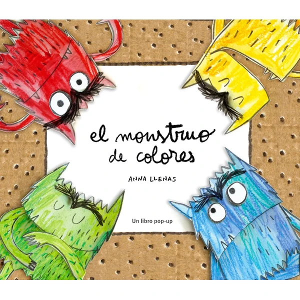
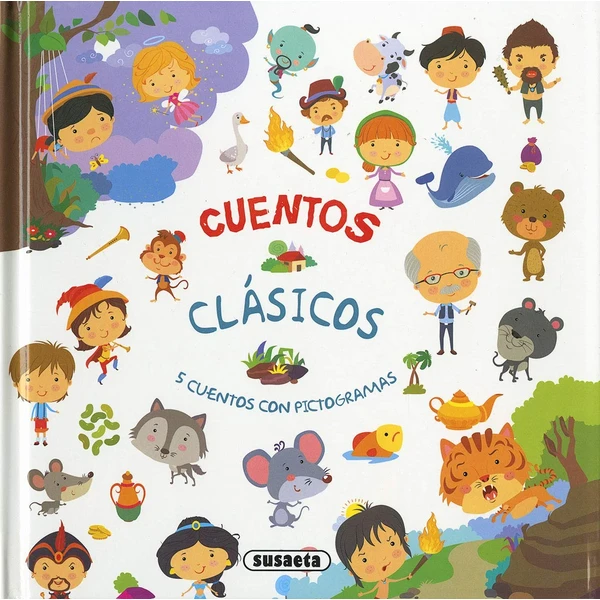
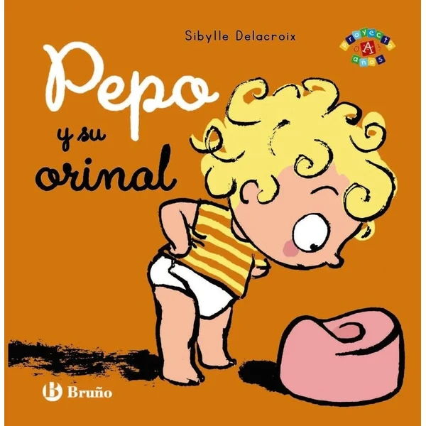
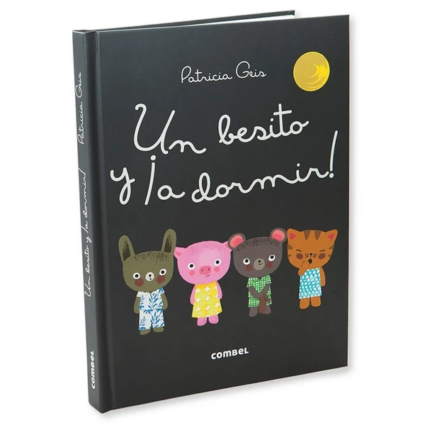
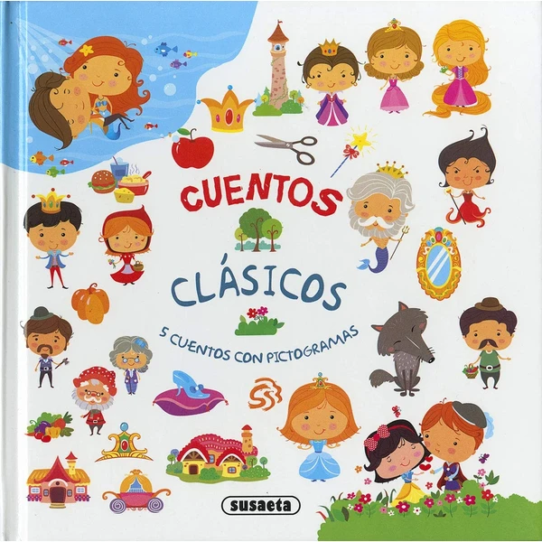
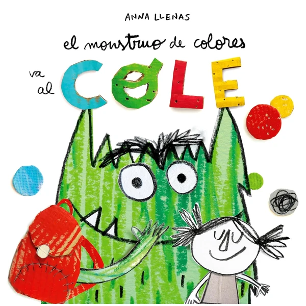

Los libros son uno de los mejores regalos a cualquier edad, y a los 3 años tienen un papel especial. En esta etapa el niño disfruta con cuentos cortos, ilustraciones grandes e historias sencillas que puede seguir y anticipar, y empieza a pedir sus favoritos una y otra vez. Cuentos ilustrados, libros con solapas, con texturas o con sonidos comparten un mismo valor: crean un momento de calma y de vínculo. En esta selección encontrarás libros pensados para niños de 3 años.
¿Qué desarrollan los libros?
Compartir un cuento impulsa el lenguaje y la imaginación, y crea un momento de conexión.
- Lenguaje
- Vocabulario
- Imaginación
- Concentración
- Vínculo afectivo
- Memoria

El monstruo de colores (edición pop-up)
La versión pop-up del célebre cuento sobre un monstruo que aprende a identificar y ordenar sus emociones por colores, con ilustraciones que cobran volumen al pasar cada página.
⭐ ¿Por qué nos gusta?
- ✔ Ilustraciones pop-up que sorprenden al pasar página.
- ✔ Ayuda a poner nombre a las emociones.
- ✔ Un clásico ya muy recomendado por educadores.
💬 Lo que más destacan las familias
Muchos padres coinciden en que el formato pop-up capta la atención incluso de los niños que todavía no se sientan a escuchar cuentos enteros. También se comenta que ayuda mucho a la hora de hablar de las emociones del día a día, señalando qué color le tocaría hoy.
Ver en Amazon

Cuentos Clásicos con Pictogramas - Aventuras
Una recopilación de cinco cuentos clásicos de aventuras (con personajes como Pinocho o Aladino) narrados con pictogramas que sustituyen algunas palabras, para que los más pequeños empiecen a "leer" antes de saber leer del todo.
⭐ ¿Por qué nos gusta?
- ✔ Pictogramas que facilitan seguir la historia solos.
- ✔ Cinco cuentos clásicos de aventuras en un volumen.
- ✔ Tapa dura, resistente al uso diario.
💬 Lo que más destacan las familias
Los compradores valoran especialmente que el niño pueda seguir la historia señalando los pictogramas, sintiendo que está leyendo aunque todavía no sepa hacerlo del todo. La tapa dura también aguanta bien que se hojee una y otra vez.
Ver en Amazon

Pepo y su orinal
Un cuento sobre el proceso de dejar el pañal, protagonizado por Pepo y su orinal, pensado para acompañar esta etapa con humor y cercanía.
⭐ ¿Por qué nos gusta?
- ✔ Aborda con naturalidad el paso del pañal al orinal.
- ✔ Historia cercana y con humor.
- ✔ Formato de cartón resistente.
💬 Lo que más destacan las familias
Entre los comentarios más habituales aparece lo bien que ayuda a quitarle hierro al momento de dejar el pañal, con un tono cercano que hace sonreír a los niños en vez de darles vergüenza. Se convierte fácilmente en lectura repetida durante esas semanas.
Ver en Amazon

Un besito y ¡a dormir!
Un cuento de la colección Los Dudús pensado para acompañar la rutina de antes de dormir, con un tono tierno y repetitivo que ayuda a crear el hábito del sueño.
⭐ ¿Por qué nos gusta?
- ✔ Pensado específicamente para la rutina nocturna.
- ✔ Tono tierno, ideal para leer en voz baja.
- ✔ Formato de cartón resistente.
💬 Lo que más destacan las familias
Se repite bastante el comentario de que se acaba convirtiendo en parte fija de la rutina nocturna, porque el niño lo reconoce como la señal de que toca dormir. El tono suave invita a bajar el ritmo antes de apagar la luz.
Ver en Amazon

Cuentos Clásicos con Pictogramas - Princesas
De la misma colección que el otro volumen de esta lista, esta vez con cinco cuentos clásicos de princesas narrados con pictogramas que sustituyen algunas palabras.
⭐ ¿Por qué nos gusta?
- ✔ Pictogramas que facilitan seguir la historia solos.
- ✔ Cinco cuentos clásicos de princesas en un volumen.
- ✔ Tapa dura, resistente al uso diario.
💬 Lo que más destacan las familias
No es raro encontrar comentarios sobre lo bien que combina con el volumen de aventuras de la misma colección, para tener variedad de historias con el mismo sistema de pictogramas. A los niños les gusta ir reconociendo los dibujos que ya conocen del otro libro.
Ver en Amazon

El Monstruo de Colores va al cole
La continuación del célebre cuento sobre las emociones, ahora centrada en la primera experiencia de ir al colegio, ideal para acompañar esta nueva etapa.
⭐ ¿Por qué nos gusta?
- ✔ Aborda las emociones del primer día de colegio.
- ✔ Continuación de un cuento ya muy querido.
- ✔ Formato de cartón resistente.
💬 Lo que más destacan las familias
Quienes lo han comprado destacan que ayuda a hablar con naturalidad de los nervios del primer día de colegio, apoyándose en un personaje que el niño ya conoce y le da confianza. Muchas familias lo usan como ritual las noches antes de empezar el curso.
Ver en Amazon